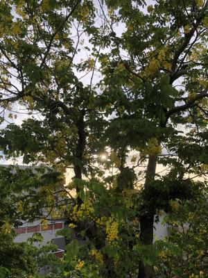

うるがいの話 ある日
最新: 図書貸出レシート【うるがいの話 ある日】とは 一日だけのプログです
『うるがいの話』の最新一日だけのプログで、通信料が少なく経済的だ。カニの画像をクリックすると全ての日付が載る『うるがいの話』サイトを表示します
|
|
【うるがいの話】 うるがい(ｳﾙｶﾞｲ urugai)とは、『もずくがに』の名前でとても大きくなります。 |
|---|---|
|
|
【カミマヤーの話】 猫のことを方言でマヤーといいます。カミマヤー（kamimayaa）とは、神の猫のことです。 |
|
【たながぁの音楽】 たながぁ（ﾀﾅｶﾞｰ tanagaa）とは手長えびのことで、何種類かあり大きいのは車 エビぐらいになります。 |

|
【ぶながぁの話】 ぶながぁ(ﾌﾞﾅｶﾞｰ bunagaa)とは、赤い髪の毛、赤い身体、そして身長は１ｍ２０ｃｍ ぐらい、川の蟹を食べているの目撃された。場所は沖縄県国頭郡大宜味村のと ある村僕の隣近所に住んでいる爺さんから、聞いた話です。 |
|
|
【ギーマの話】 ギーマ(giima)とは、山原の里山に咲くスズランに似た、 花を付けます。実は食べられます、 気が付くと口の周りが紫になっています。 |
2022年07月09日 (土）図書貸出レシート
14:48

本を読んでいたら、図書貸出レシートが挟まれていた。今読んでいる本と、別
の一冊の２冊の明細が印字されている。その本を調べてみた、んー、借りない
それにしても、この借りた人はなかなかの人物だ。２冊の本とは、図書館の紹
介では、次のとおりである。私が読んでいるのは、翻訳の本である。
物語(ストーリー)でわかるベンチャーファイナンス入門
社会人１０年めの中堅社員が脱サラして起業することに。彼は企業財務が専門
のゼミの教授に相談に赴き…。起業から株式公開(または売却)まで、会社のス
テージごとに必要なファイナンスの知識を、物語を通して解説する。
翻訳のダイナミズム
翻訳者は、新たな文化創出のために格闘する―。古代ギリシアの科学・文化は
いかに中世アラビア・近代日本へと継承されたのか。叡知の伝播を壮大詳細に
描いた「翻訳の世界史」。
１４時４１分 ビットコインの総資産 ￥８、４７５↓